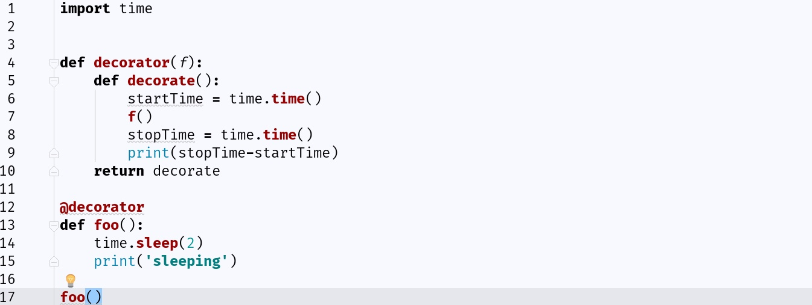

python的装饰器(上)

文章先是发在逼乎，估计有一个月了，看到的人和赞的人也并不多，可能太偏向于基础了,python的装饰器进阶版的文章因为最近一直在外出，每天回家都比较累所以没有去写他(自己懒！)，尽量早点鞭策自己早点写完吧
说实话很早以前就想再继续更新博客了。第一个不瞒您说，太菜了，怕写的东西被人笑话是一方面，另一方面就是自己有很严重的拖延症，还比较懒。2018年立一个flag吧，最好是有时间规划的更新博客，比如一个星期或者两个星期一更
废话分界线
读这篇你必须了解的知识：
- python函数的知识
- python基础操作
刚学python的时候，对装饰器这个概念很是难理解。在百度和知乎上看过很多大佬的文章，但总没有醍醐灌顶的那种感觉。总是觉得好像懂了些什么，其实又不懂。
所以我决定写篇文章，用我的思路来来帮助看到这篇文章的读者理解python中的装饰器，希望能让大家少踩些坑。
名词解释
我觉得要了解装饰器，首先要明白什么是装饰器，装饰器拿来干嘛用，装饰器为什么这么写。这就是看完这篇文章你能知道的全部
- 装饰器：
从字面上的意思来说，装饰器。起到的是装饰的作用，其实说白了就是给函数加一个新的功能。
他一般长成下面这个样子：
1 | def decorator(f): |
其中decorator就是装饰器了。可能看到这边会有点懵，到后边会慢慢讲
- 闭包：
在我们讲装饰器的时候，要先讲一下闭包。闭包是一种奇特的函数
变量的作用域
1 | wr = 1 |
大家看一下在foo函数中是不是能取到函数外的wr变量呢？当然是可以的
1 | def foo(): |
那么问题来了，在这个foo函数中我嵌套了一个wrapper函数，在wrapper函数中能不能取到在foo函数中的wr变量呢，其实是可以的
wrapper函数使用到wr这个变量的时候，他先在自己函数内部寻找wr变量，发现没找到之后就会在他的上级，也就是这里的foo函数中寻找，然后他找到了wr = 1。如果foo中也没有找到wr变量的话，还会继续向更上一级寻找。
python中的一切都是对象
然后我们这边要讲一句python中很经典的一句话，就是python中的一切都是对象，其实我们实现的每个函数，都是顶级父类object的子类。这句话看不懂没关系，我们来举例子：
1 | def foo(): |
大家觉得这段代码对吗，看起来我把foo赋值给了fun，那么fun里面到底是什么呢，我们来print一下吧：
在我加上一个print来把fun输来看到下面的提示。没有报错说明我们的程序没有错，那么输出的是什么呢？1
<function foo at 0x02BA7348>
function foo at 一串奇怪的东西，这串奇怪的东西其实是一串16进制的值，是函数foo在内存中的地址。原来我们在代码中打
fun = foo
的时候其实是把foo函数的内存地址给了fun啊
那我们想想我们之前是怎么调用foo函数的?1
2
3
4def foo():
print("im foo function!")
foo()
是不是这样,用 foo()来调用。那么我们是不是就可以得出:1
2
3
4
5def foo():
print("im foo function!")
fun = foo
fun()
这样我们就给foo函数改了个名字变成了fun，大家可以把代码放到pycharm里试试，把fun()和foo()的答案是不是一样的
知道这两样之后，我们可以继续来了解闭包了：
我们先不谈闭包到底是干嘛的，到后面会有演示，我们刚才说过，闭包是一种奇特的函数，那么我们就先搞清楚什么样的函数才能称得上叫做闭包这个名字:
- 闭包函数必须有内嵌函数
- 内嵌函数需要引用该嵌套函数上一级namespace中的变量
- 闭包函数必须返回内嵌函数
嗯，达成这三样我们就能创建一个闭包了，那大家和我一起来创建一个吧
闭包函数必须有内嵌函数:
先达成第一件，我们要先有个内嵌函数：
直接抄上面的例子
1 | def foo(): |
好了好了，现在我有个内嵌函数了，在foo中嵌了个wrapper函数。
内嵌函数需要引用该嵌套函数上一级namespace中的变量
然后第二步其实就是说嵌在里面的那个函数要引用外面那个函数里面的一个变量才行。那这个简单啊，我可以
1 | def foo(): |
嵌套在foo函数中的wrapper函数引用了foo函数中的a变量
嘿嘿，先别管这个函数有什么卵用，我们先来实现一个闭包先，然后我们这样也可以完成第二点：
1 | def foo(a): |
然后我们来达成第三步
闭包函数必须返回内嵌函数
这个就更简单了嘛，加个return嘛，但是这里要注意了，是闭包函数返回内嵌函数，也就是说，套在外边的那个函数用return返回套在里面的那个函数的内存地址
也就是foo函数return wrapper函数的内存地址
1 | def foo(a): |
这样我们就亲手创建了一个闭包，下面我们就要讲讲什么时候我们会用到闭包了：
用途解释
首先我们来假象一个需求，我们要创建两个个函数foo、bar foo函数只要做一件事情，print一个hello
bar函数只要做一件事情，print一个world，这个简单啊对不对，大家都会：
1 | def foo(): |
好了，这个函数做得不错，大家都采用了这个方案并在很多代码中调用了这个函数。
有一天产品经理过来说要给所有函数加一个功能，打印这个函数的运行时间(mmp,就输出个hello world还要我打印运行时间)。产品经理的小小要求还是要满足的:
1 | import time |
但是这样虽然成功了，万一有很多函数到时候都要打印运行时间，那岂不是要完蛋。并且这种代码被同行看见会被笑话的，不行不行不行。改一改：
1 | import time |
写完之后瞬间觉得自己的智商碾压大众,让他们以后要用某个函数想知道运行时间的时候就用timeFUN()函数。
但是！那foo函数和bar函数已经在很多地方应用了，改起来多麻烦，得想想办法。这个时候我们想到了闭包的移花接木大法,具体操作：
1 | import time |
很显然timeFUN是一个标准的闭包吧，timeFun返回了wrapper函数的返回地址，这个时候我们把timeFun返回的wrapper函数的返回地址再赋值回foo，是不是有点绕，多看几遍这句话自己敲下代码
经过这一顿骚操作，瞬间完成了需求。
最后，其实python给了我们一个更方便的方法可以偷懒不用写
foo = timeFUN(foo)
这种赋值了
最后完美版代码:
1 | import time |
是不是和开头的例子很像呢，这就是python的装饰器的基础运用。其实装饰器就是闭包的一种啦。下篇有时间我来讲讲装饰器的高级运用，如果foo这个函数有参数又该怎么办呢？
最后:
因为本人的水平有限可能会有许多地方理解和叙述有出入，希望大家能提出来防止我误人子弟。分享是好事，但是如果因为我理解上有问题，将来报道上有了偏差，我可是要负责任的